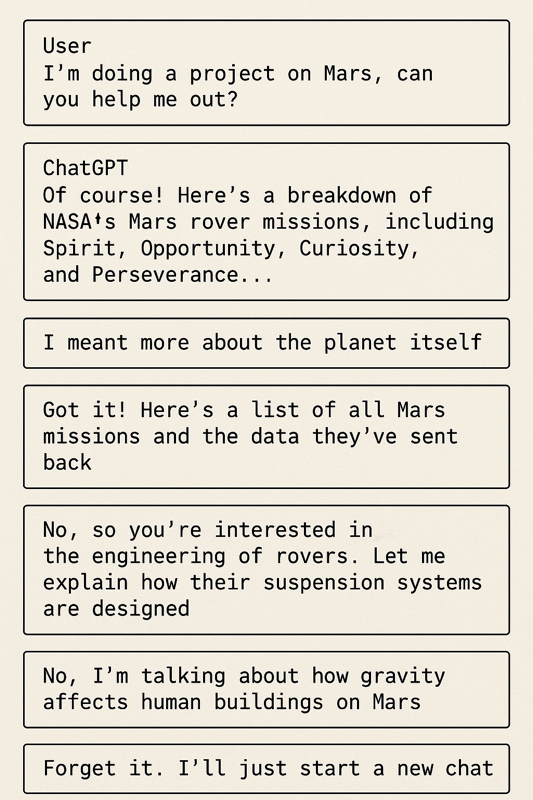

LLMs getting lost in multi-turn conversation
Thoughts
-
Underspecified instructions seriously degrade the performance of AI
-
This is a very common way of interacting with AI, especially for everyday users of the common interfaces like ChatGPT etc
-
Current benchmarks do not capture this shortcoming
-
Thinking models are not better at resolving this
based on LLMs get lost in long conversations
💬 Have you noticed AI getting repeatedly lost even after you clarify your question?
I have 🙋♂️ As, it turns out this is quite common with current AI systems. It happens when our initial instructions are underspecified, think wanting to do research for a topic of interest and AI making the wrong assumptions to deliver it. Clarifying your intent later at a conversation is not as impactful at course correcting the AI as it would have been have you been more specific in the first place.
This is partly due to the training of those models that have been trained to follow ever more complex instructions but not necessarily handle cases where crucial information is omitted. All models, including the thinking ones, seem to be affected by this so…
💡Next time you use AI spend a bit more time when specifying your request and if AI is derailed, probably better to start a new conversation and be more specific there.
